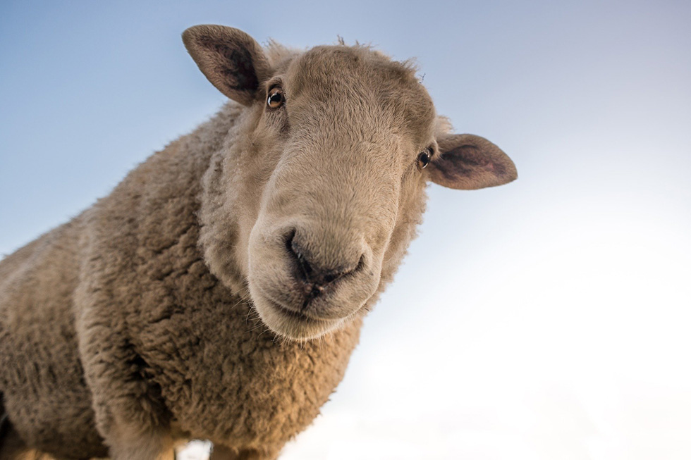
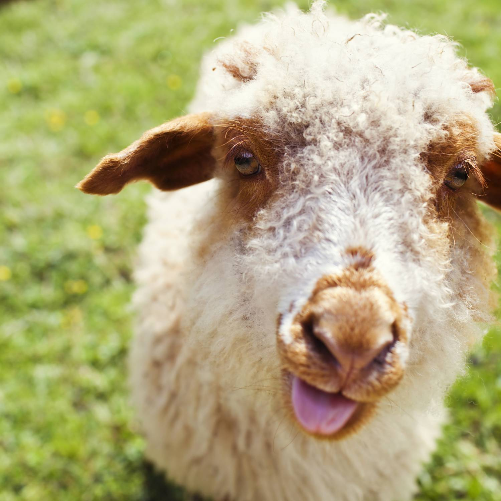

<div id="outerWrapper">
  <div id="sheepWrap">
    <div class="sheep-container">
      <div class="sheep-header">
        Sheep
      </div>
      <div class="sheep-summary">
        <div class="sheep-summary-item">
          <span>
            ich bin Elias, das neugierige Schaf, wurde auf einer idyllischen Farm in den grünen Hügeln geboren.
            Von klein auf zeigte ich eine ungewöhnliche Vorliebe für das Erkunden meiner Umgebung.
            ich liebe es am Tag mehrmals zu essen.
            
          </span>
          <div class="sheep-Description">
            
            heyy ich bin Ivana, das schelmische Schaf. ich kam mit einem Dauergrinsen zur Welt und sorgte von Anfang
            an für Lachanfälle in der Herde. Statt mich mit Gras zu beschäftigen, ich entschied mich, die neueste
            Trendsetterin im Wolluniversum zu werden.
          </div>
        </div>
      </div>
      <div class="wool-Box">
        <details>
          <summary>Wool Production</summary>
        <div class="wool-Box-Hidden">
          Wool Production in total: 20 kg
        </div>
        </details>
      </div>
      <app-vote-button></app-vote-button>
      <hr>
      <div class="sheep-footer">
        <a href="https://de.wikipedia.org/wiki/Schafe" target="_blank">Learn more</a>
      </div>
    </div>
  </div>
</div>
